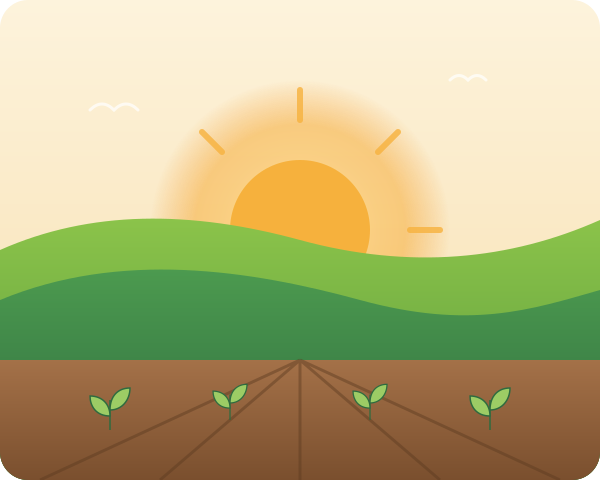

Fertilizers
Water-soluble NPKs, secondary nutrients and chelated micronutrients for precise, balanced feeding.
View rangeNutrimo Agri Science develops and supplies high-performance fertilizers, crop protection solutions and bio-stimulants that help farmers grow more — responsibly.

From seed treatment to harvest, our portfolio is built to work together for maximum yield and quality.
Water-soluble NPKs, secondary nutrients and chelated micronutrients for precise, balanced feeding.
View rangeInsecticides, fungicides and herbicides that control pests and diseases while protecting the crop.
View rangeHumic, seaweed and amino-acid based products that boost root growth, flowering and stress tolerance.
View rangeMicrobial and organic inputs that rebuild soil life and support sustainable, residue-free farming.
View rangeEvery formulation we offer is developed with agronomic research, validated in real fields and supported by people who understand farming.
Our shield-and-rising-sun emblem stands for two promises: protecting every crop, and helping every farmer grow.
Know exactly what your soil needs with lab analysis and a customised nutrient plan.
Learn moreStage-wise crop schedules and pest alerts from experienced agronomists.
Learn moreField days and workshops on nutrition, IPM and the safe use of crop protection products.
Learn moreOur R&D team works on nutrient-use efficiency, bio-based crop protection and smarter application methods — so every rupee spent on inputs delivers more.
Each product moves through formulation, lab validation, greenhouse study and field trials before it reaches a farmer.
After switching to the recommended water-soluble schedule, my tomato plants flowered evenly and fruit size improved noticeably.
The soil test report was easy to understand, and the agronomist helped me cut unnecessary urea use without losing yield.
Reliable supply, consistent quality and quick technical support — our customers ask for Nutrimo by name.
Partner with a growing agri-science brand. Competitive margins, marketing support and technical training for your team.